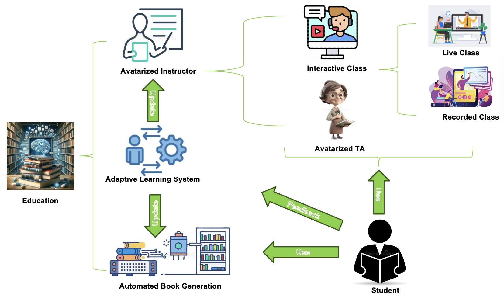
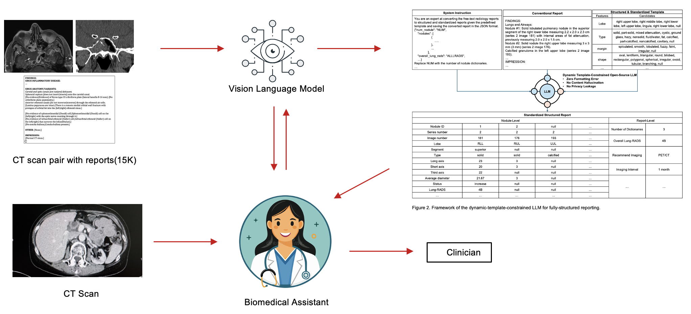
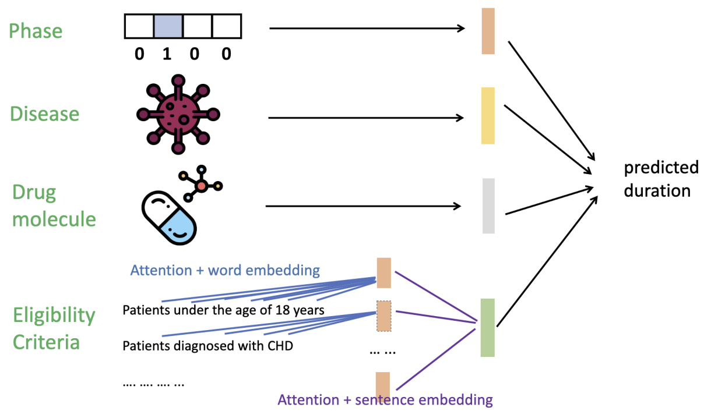
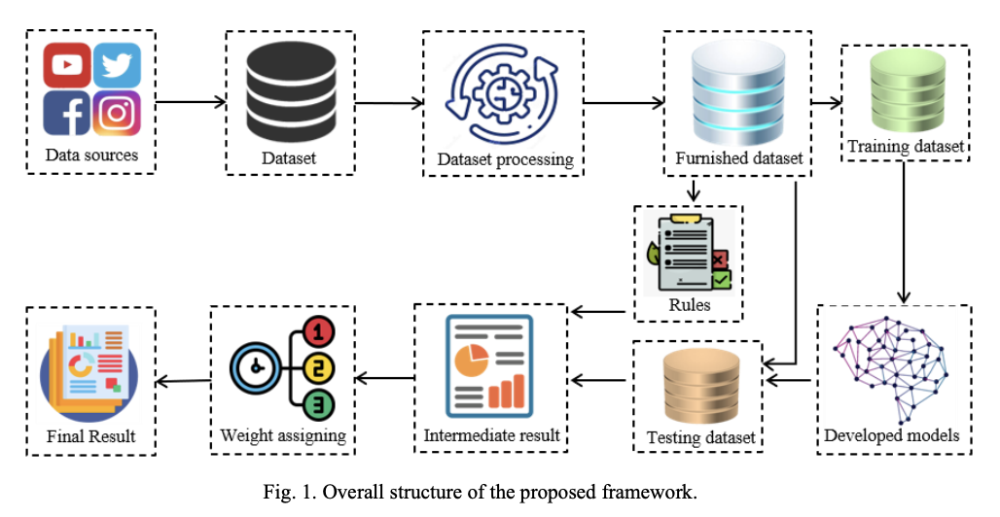

arXiv Preprint 2025
MENTOR: Multimodal Engine for Neural Teaching and Observational Reasoning

arXiv Preprint 2024
IMAGINER: Intelligent Multimodal Medical Architecture for Generating Integrated, Navigable, and Explainable Radiology Reports

NeurIPS 2024 Workshop on AI for New Drug Modalities
Trialdura: Hierarchical attention transformer for interpretable clinical trial duration prediction

Informatics in Medicine Unlocked · SN Computer Science · BenchCouncil Transactions
COVID-AI: Deep Learning for COVID-19 Diagnosis and Epidemiological Modeling

IEEE ICCIT 2022 • IEEE ICCIT 2023 • IEEE ECCE 2025